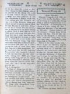

Languages
台文
｜
中文
｜
日本語
｜
English
字體
小
｜
中
｜
大
首頁
/
白話字數位典藏
白話字數位典藏全文檢索
查詢模式
選擇年代
清國時代(1885-1895)
日本時代(1895-1945)
戰後(1945-1969)
1885-1895
1896-1905
1906-1915
1916-1925
1926-1935
1936-1945
1946-1955
1956-1965
1966-1969
1970-1980
1980-1990
1990-2000
2000-2010
2010-
選擇文類
詩
散文
小說
戲劇
傳記
選擇作者
陳清忠
陳清義
編輯部
柯設偕
吳天命
明有德
偕叡廉
周天來
劉華義
王守勇
林茂生
陳添旺
王占魁
柯維思
賴仁聲
陳瓊琚
雪峰逸嵐
吳清鎰
郭水龍
蕭樂善
許水露
葉金木
陳金然
章王由
廖得
鄭連坤
潘道榮
楊士養
梁秀德
劉約翰
周淑慧
高金聲
林燕臣
黃六點
蔡愛義
許有才
主筆
巴克禮
陳鳩水
郭朝成
張基全
陳明清
陳能通
拾穗生
顏振聲
卓恆利
傳道局
胡文池
劉主安
鄭兒玉
Google Search
Yahoo Search
全部
刊名
標題
標題(教羅)
全文
全文(教羅)
作者
第82頁，共141頁(共2,805筆資料) 0.65516901016235sec
1
...
80
81
82
83
84
...
141
To Page
GO
文字列表
圖文列表
排序
日期
文類
刊名
作者
影像
[1927-9 芥菜子 文類-散文 作者-柯設偕/Koa Siat-kai]
(2)
佈道參考疑問應答 [ Pò͘-tō chham-khó Gî-būn èng-tap ]
佈道參考疑問應答。 佇佈道抑是說教的中間聽的人有時有僥疑，oh信，躊躇的心。有的愛閣問，就著說明予in聽。Taⁿ寫淡薄通做參考。 1. 我to猶少年，少歲，所以也毋免打算將來的事？ 2. 人若死，kám毋是攏煞去？著引起。路加16：22，23。 3. 我平素to無做啥歹，kám會定罪mah？著引起。約3：3。 4. 上帝是真慈悲，所以kám毋是無欲看見我的罪？著引起。出埃及記34：7。 5. 我暝日to有祈禱，所以上帝敢會赦免我。著引起。馬太7：22，23。 6. 怎樣看我佮歹人相同？著引起。以賽亞 53：6。羅馬5：15。 7. 我所著信的，是著信甚物？著引起。以賽亞 53...
[1927-9 芥菜子 文類-散文 作者-柯設偕/Koa Siat-kai]
(1)
淡水教會有志佈道隊 [ Tām-suí kàu-hoē Iú-chì pò͘-tō-tuī ]
淡水教會有志佈道隊 佇今年2月，淡水教會有組織一陣。 佈道隊。名稱名叫「淡水教會。 佈道隊。 目的就是，愛傳報福音佇淡水附近的地方，通擴張上帝的聖國。 起頭有揀He-lô-á，(離淡水4 mai-英里)。因為以前有設拜堂佇遐。 逐拜六，隊員有輪流去遐佈道，演講教主日學。 遐的人真歡迎，機會通講真好。向望會漸漸發展，加添人額。 M̄-nā按呢，也有teh計畫著佇較濟所在來佈道，設主日學。 Kiám-chhái將來會通設講義所。向望讀報的兄姊，佇祈禱的時，替這个淡水教會佈道隊祈禱。 向望上帝的幫贊，會漸漸發展。...

[1927-11 芥菜子 文類-散文 作者-柯設偕/Koa Siat-kai]
(2)
淡水中學 [ Tām-suí Tiong-o̍h ]
淡水中學 (柯設偕) 淡水中學是佇1914年3月9號設立開校。到今年已經是13年久lah。通講是本島中第一久的私立的中學。也出業生已經有9回，共67名。現在教員14 位，學生倚200名。漸漸有ná teh進步。通講地基已經在lah。對taⁿ起穩當會受上帝的大幫贊，發展隆盛，利益濟濟人，閣通榮光天國佇台灣。 逐年有募集新入生。Mâ年4月新學年，猶原有欲閣募集。所以大大向望讀報的兄姊，鬥廣告，鬥宣傳這間學堂，予濟濟人會知，會了解這間的精神，佮理想。也向望濟濟人會來入這間學堂。 常常捌有人，到眾人攏入學清楚了，才欲來交涉，看有甚物特別的路。這款實在有時真通同情，m̄-kú...
[1931-9 台灣教會報/芥菜子 文類-詩 作者-柯設偕/Koa Siat-kai]
林燕臣牧師的詩 [ Lîm Ian-sîn Bo̍k-su ê Si ]
林燕臣牧師的詩 1931.09 558卷，芥菜子 68號 p.14 (柯設偕) 林燕臣牧師的詩 這擺南北傳教師聯合總會的中間，佇7月15號e晡，有懇親會。林燕臣牧師有做3首詩，佇懇親會的時，伊有讀，也有吟。 這3首實在通予逐家做參考，所以猶袂印佇別款的雜誌的代先，寫佇遮，做參考。 1.一片荒高草色青， 山明水秀映秋庭， 凡塵不染成佳景， 明師休居閱聖經。 1 一片的山尖是懸，草色是青。 山的明朗佮水的清秀，相向佇這个秋天的埕裡。 世俗的塵埃袂沐著，來成這个好的景致。 出名的讀冊人安靜佇遮徛起，來看聖經。 2.淡江美景足安居， 教育英才好讀書，...
[1927-6 芥菜子 文類-散文 作者-柯設偕/Koa Siat-kai]
(1)
台灣的山佮溪 [ Tâi-oân ê soaⁿ kap khoe ]
台灣的山佮溪 佇台灣，上一萬(10000) 尺以上的山有48 个。 這tia̍p袂攏總寫遐的名佇遮；總是愛寫幾若个。 新高山 13075 尺 Chhù高山 12972 尺 秀姑巒山 12650 尺 Má-pho͘-lah-su山 12560 尺 南湖大山 12531 尺 實在佇咱台灣有真懸的山。 也台灣的溪，也是真濟條。 獨水溪 42.里(日本里) 下淡水溪 39.7里 曾文溪 33.7里 淡水河 33.1里 大甲溪 30.里 咱台灣的山水通講袂bái，不止有通呵咾...
[1927-7 芥菜子 文類-散文 作者-柯設偕/Koa Siat-kai]
(1)
佈道祕訣 [ Pò͘-tō pì-koat ]
佈道祕訣 現時正是佈道的好機會，因為較無落雨，閣月光暝的時，欲佇野外聚集實在真好勢。 所以講，現時是佈道的好時期。 耶穌早前猶原是四界行，四界聚集，因為按呢會予人較趣味，較心適。 所以咱現時猶原著學這个方法，來大大鼓舞佈道的工，通曠闊天國佇咱台灣的中間！ 今論佈道的方法有濟濟款。有的吟詩，有的用樂器，有的演說，濟濟款。卻是照各人的趣味，各人的經驗來創看佗一項較有效果。 論佈道所欲講的，我看有3項較大要緊。就是：- 1、神。(上帝) 2、罪。 3、救。 抑是講：- 1、信上帝。 2、反悔罪。 3、靠耶穌。 這3項是基督教根本的道理。所以真大要緊著拆明予粗粗信的人...
[1941-7 台灣教會公報 文類-散文 作者-柯設偕/Koa Siat-kai]
信心德行，智識 [ Sìn-sim Tek-hēng, Tì-sek ]
Normal 0 0 2 false false false MicrosoftInternetExplorer4 /* Style Definitions */ table.MsoⁿormalTable {mso-style-name:表格內文; mso-tstyle-rowband-size:0; mso-tstyle-colband-size:0; mso-style-noshow:yes; mso-s...
[1933-9 台灣教會公報/芥菜子 文類-散文 作者-柯設偕/Koa Siat-kai]
偕牧師佮客人族 [ Kai Bo̍k-su kap Kheh-lâng-cho̍k ]
偕牧師佮客人族 1933.09 (芥菜子第92號)p.27 柯設偕 偕牧師來台灣傳教，攏無分別民族的差別。無論福佬、客人、平埔、南勢番 (阿美族)，或是生番，伊攏看做平等，攏無分別。因為伊來台灣的目的，是欲傳福音予攏總的民族。 總是佇台灣，福佬是比客人較濟，有5 倍濟，閣再偕牧師上陸的所在是佇淡水，所以自然起頭設教是佇福佬的中間，這是真自然的事。 毋閣伊猶原對重客人，平埔......等，所以伊連邊就對遮的方面傳教。佇客人庄設教，第一代是Sai-thâm-toé，就是設教第3年(1875)伊就來遮設。按呢通講實在是真早。彼个所在原本是番社，總是後來幾仔百的客人有搬來遐開...
[1916-9 台灣教會報 文類-散文 作者-偕叡廉/Kai Jōe-liâm]
歐洲戰爭 [ Au-chiu Chiàn-cheng ]
歐洲戰爭。 (偕叡廉記)。 1916.9，no.378，pp.7 歐洲開戰到這霎已經兩年久。彼時德國佮奧國同盟，然後閣加添兩國倚in，就是土耳其佮Bu̍t-gâ-lī。這4國大出力來攻擊聯合軍。對按呢法國，白耳義，俄羅佮Sek-hui-a的土地予in佔不止濟。起頭德國佮奧國的兵馬，以及銃，炮子真充足，所以in常常贏。舊年俄羅大失敗，予德國佮奧國拍真忝。In會輸到按呢是因為銃子無夠額。彼時有人拍算聯合軍的確輸。總是佇今年的中間俄羅的炮子對美國，英國，日本買真濟。閣再英國以前兵少，是幾十萬nā-tiāⁿ，今已經操練到五百萬便便。對按呢聯合軍的氣力真大加添。本咱若讀新聞較常攏是聽德國咧拍法國，...
[1918-1 台灣教會報 文類-散文 作者-偕叡廉/Kai Jōe-liâm]
眠夢 [ Bîn-bāng ]
眠夢1918.01 394卷 p.6人暝時睏常常愛夢--見。有時所夢見ê 不止心適，也有時實在hō͘人thang驚。有人扑算人會眠夢是因為靈魂離開身軀，四界去旅行，kiám-chhái 去到遠遠外國ê 所在。所以人teh 睏m̄ thang雄雄kā 伊扑醒，驚了靈魂倒來chhoē 無人。今人會眠夢m̄ 是因為án-ni。咱ê 靈魂其實攏無離開身軀；若有，咱的確死。咱睏落眠ê 時較罕得夢--見。第一常夢是眯--去，抑是抵beh精神ê 時。 Koh 再咱若大煩惱，抑是大歡喜，抑是身軀較無快活，也會較捷夢見。這是因為咱ê 肉體佮咱ê 心神有相聯絡ê 所在tī--teh 。 譬喻一個人teh 睏，也伊...
[1918-7 台灣教會報 文類-散文 作者-偕叡廉/Kai Jōe-liâm]
天牢板 [ Thian-lô-pán ]
天牢板1918.07 400卷 p.6(偕睿廉記。)熱天已經近lah。空氣日日那燒lō。Koh無久就大熱。熱若到大家就艱苦。雖然穿熱衫出力ia̍t扇，抑是吃冰水也是boē秋瀙。日頭一下炎厝內liam-piⁿ熱phóng-phóng。厝頂曝一下燒，燒氣tuì頂面hah--落來，無久汗就chhap-chhap滴，扇koh較ia̍t都boē秋瀙。 厝內曝到熱滾滾，囝仔大細大家也是艱苦。Hip熱了病也liam-piⁿ到。有ê生痱子，有ê生粒仔，有ê發起熱症，熱到，症頭也到。今m̄知有甚物好法度thang hō͘厝內較涼。較秋瀙無？有，有一個好法度。厝內著釘天羅板。厝若無天羅板，厝頂曝燒，燒氣liam...
[1921-8 台南府城教會報 文類-散文 作者-偕叡廉/Kai Jōe-liâm]
北部事務：偕先生ê批 [ PAK-PŌ͘ Sū-Bū:Kai Sian-siⁿ ê phoe ]
偕先生ê批1921.08 436卷 p.5淡水中學校列位生徒平安！ Tuì阮佮lín相離開到chit-tia̍p,tī路中有得著平安。水路真平坦。雖罔tī 大洋天氣不只冷，常常有落雪，iáu-kú風湧不只恬靜。 Tuì橫濱到加拿大搭船15日久，tī 路中無甚物thang看，只有幾若尾鯨魚nā-tiāⁿ。一日有一尾不只大尾，大約有4丈長，浮倚tī船--ni̍h。伊ê頭殼差不多有一丈闊。 到Vanco͘ver，有教會佮朋友來等接阮 。阮tī hia 2日久，toà tī早年通世界馬拉松選手ê人ê兜。Hit 個選手是名叫 Dick Grant。伊細漢ê時若搭火車，抑是坐馬車就眩；所以姑不chiong...
[1933-10 台灣教會公報/芥菜子 文類-散文 作者-偕叡廉/Kai Jōe-liâm]
東西南北 [ Tang Sai Lâm Pak ]
東西南北 偕叡廉 1933.10 (芥菜子第93號) p.24-25 (1)佇印度Kat-kut-a ，有一個少年英國人，不止才情；又閣是工學士。伊對得著主寶貝的道理，就愛專心傳報福音。家己組織聖經學校，教示學生道理工業。攏無受人補助。現時聖徒有24人，大家真熱心。 (2)加拿大長老教會，有1320間拜堂佮講義所；長老有6133人。舊年有加 865 的大人，佮5728 的囡仔行洗禮。 (3)毒蛇若是予別尾毒蛇咬著，猶原會死。 (4)照法國一个新聞記者所調查，世界有17个大好額人。今將in 的名排列佇下底：- (1) Edsel Ford：美國自動車王。 ...
[1928-2 台灣教會報/芥菜子 文類-散文 作者-偕叡廉/Kai Jōe-liâm]
死海 [ Sí hái ]
死海 偕叡廉 1928.02.01 515卷(芥菜子第24號)p.17-18 拍算通世間無半个海比死海較奇怪，無半个比伊較出名，無半个hiah大干涉佇歷史。 死海照咱逐人所知，就是佇猶太國的東南爿。這个海長大約有15 phò͘，闊有3 phò͘半，深有130丈。死海親像鼎底。猶太國親像鼎，怎樣講按呢？因為比四圍的所在較低，伊的水面猶有比地中海較低1600尺。通世間無一所在比海較低到按呢。 死海的水到極鹹，較鹹海水有九倍，所以佇伊的內面攏無活物，水內毋但有鹽真濟，以外有別項，其中就是kiⁿ較濟。在早人teh拍算死海無啥物路用，因為無活物佇teh，連一尾魚也無。Taⁿ知所出的鹽佮kiⁿ達...
[1928-5 台灣教會報/芥菜子 文類-散文 作者-偕叡廉/Kai Jōe-liâm]
趁十萬起拜堂 [ Thàn cha̍p-bān khí Pài-tn̂g ]
趁十萬起拜堂 偕叡廉翻譯 1928.05.01 518卷(芥菜子第27號) p.17-18 人講Pa-tîn牧師無好口才，若是伊真熱心，謙卑閣gâu料理教會。伊平素徛起佇美國南爿，草地的所在；所踮的鄉庄人數約略有800人。去做牧師了後濟濟會友搬徙去別位，中間也有少年人無愛去禮拜。，禮拜日若到，規陣相-chhoā駛自動車四界thit-thô。拜堂又舊閣歹，應該著，修理，毋kú經費不足。雖是按呢，Pa-tîn牧師也無一時仔失志，伊反轉對Tok-hoē講著起新的拜堂。聽見這个代誌列位的長老不止gông-ngia̍h，因為知若無錢通修理舊--ê，thái有錢通起新--ê？總是Pa-tîn牧...
[1928-6 台灣教會報/芥菜子 文類-散文 作者-偕叡廉/Kai Jōe-liâm]
講方言 [ Kóng Hong-giân ]
講方言 偕叡廉 1928.06.01 519卷(芥菜子第28號) p.12-13 前pang美國出名的神學博士，彭牧師有寫一篇落佇教會報，teh論起講方言的事，博士不止有研究這个代誌。伊所寫的逐項真詳細，若是真長，所以佇遮簡單拾淡薄來寫佇下底：－ 信聖經是著，總是有一等號的人有信聖經，也有相參信別項。In有信聖經也有相參信in 的眠夢，信in 的思想是著，信in 的想像；結局來講就是將in所信的的確毋通減少聖經內所記載--ê；若是按呢就成做一款的批評者，毋願承受聖冊內所記載的。咱所信的也毋通比聖經內所講的較濟。若是按呢加添就成做異端。毋通將聖經共伊減少，也的確毋通共伊加添。 可...
[1928-7 台灣教會報/芥菜子 文類-散文 作者-偕叡廉/Kai Jōe-liâm]
東西南北 [ Tang Sai Lâm Pak ]
東西南北 偕叡廉 1928.07.01 520卷(芥菜子第29號) p.16-17 1. 基督教佇印度國teh進步比佇內地抑是Chi-ná iáu-kú有較緊。 2. 佇這50年的中間印度國的基督信徒有加添三百萬人。佇內地有加添二十五萬，佇Chi-ná有加添五十萬。 3. 佇美國庄裡的所在有十萬間禮拜堂，牧師有四萬个，通知一个牧師有兼幾若間拜堂。 4. 今年佇印度有掠著一尾大蛇長二丈七，也有掠著一尾飯匙chhèng長十三尺。 5. 腓力牧師做工濟濟年久佇印度。舊年伊有共1059人行洗禮。 6. 前pang佇新加坡有開傳教師的...
[1933-9 台灣教會公報/芥菜子 文類-散文 作者-偕叡廉/Kai Jōe-liâm]
東西南北 [ Tang Sai Lâm Pak ]
東西南北 1933.09 (芥菜子第92號) p.23-24 偕叡廉 (1)這幾年，猶太國不止大進步。工場漸漸那加添。現時佇咧製造玻璃、鐵器、布、電器的物品，佮濟濟款樹奶的物；雪文、麥、餅佮濟濟款的油也有咧製造。 (2)佇約旦河有發電所。佇死海有提出濟濟鹽以及puî-tan，值錢無數萬。 農業也真發展。舊年所出的柑仔有200萬箱今年按算會出400萬箱。種柑的所在一甲著2500箍。 (3)猶太國無偌大。田園是咱台灣一半大若定。 (4)天主教不止愛起大間禮拜堂。現時佇英國咧起一間。工事按50年久。若起好，會坐得10000人。經費按3000萬。 (5)台灣有6款的毒蛇，...
[1933-12 台灣教會公報/芥菜子 文類-散文 作者-偕叡廉/Kai Jōe-liâm]
東西南北 [ Tang Sai Lâm Pak ]
東西南北 1933.12 (芥菜子第95號) p.25-26 偕叡廉 照南京神學校長所報告，伊的本校將來欲設法真齊備，因為有得著一个美國人的寄付金兩千萬(Y20000，000)。 現時猶太國有百外萬人，中間20萬是猶太人。 前無偌久有掘著索羅門王的馬寮佮伊所造的路。路是用大石來鋪。馬行到萎去的痕攏猶佇teh。看聖經就知，彼時索羅門有濟濟馬。 佇波斯國有掘著聖經所講，Kó͘-lia̍t佮Tāi-lī-a-王的王宮。石柱真懸，真媠，攏猶佇teh。以外有揣著濟濟款的金器佮磁器；也有掘著濟濟石像佮字。證明聖經所記載的，是實。 近來德國不止歹款待伊本國的猶太人...
[1934-5 台灣教會公報 文類-散文 作者-偕叡廉/Kai Jōe-liâm]
那久那知 [ Ná kú ná chai ]
那久那知 (偕叡廉) 1934.5，no.590，pp.27 舊約聖經內有記載濟濟古早的代誌，不止有大干涉佇古早的歷史。聖經是上帝所啟示--的，所以所記載--的是實在。可惜世間人的心肝常常愛囥僥疑，致到對家己的毋捌，隨便愛批評。 親像舊約聖經內有講起在早亞述國，有出一个皇帝名叫Sat-kun。伊的皇太子名叫Se-ná-ki-li̍p。無愛信聖經的人講，無影有皇帝名叫Sat-kun，因為聖經以外毋捌聽著伊的名。古早的歷史也無講起伊的代誌。這是聖經寫毋著。 總是後來有揣著Sat-kun王所起，真媠，真堅固的王宮發見著--的。佇遐有揣著一塊磚仔，比人的手底加大無偌濟。佇磚仔的頂面有...
第82頁，共141頁(共2,805筆資料)
1
...
80
81
82
83
84
...
141
To Page
GO
數位典藏國家型科技計劃
拓展台灣數位典藏計畫
版權所有 國立台灣師範大學 台灣文化及語言文學研究所©2008
10610 台北市和平東路一段162號│TEL 02-7734-5516│Fax 02-2358-2461
計劃簡介
典藏特色
執行架構
計畫典藏數位化流程
成員介紹
台灣白話字發展簡介
巴克禮牧師與《台灣教會公報》
廈門話字典-杜嘉德
白話字教學-打馬字
中國南方白話字發展
台灣基督教長老教會簡表
台灣基督教長老教會教會歷史委員會
《北部台灣基督長老教會教會ê歷史》
關於陳清忠
白話字文學：台灣文學的早春